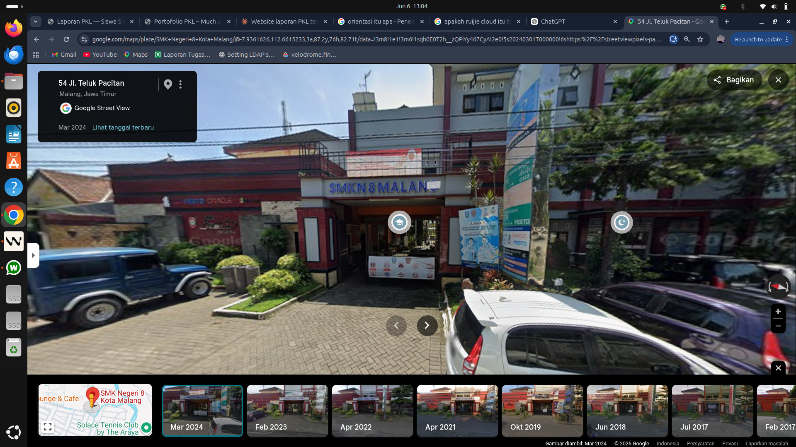
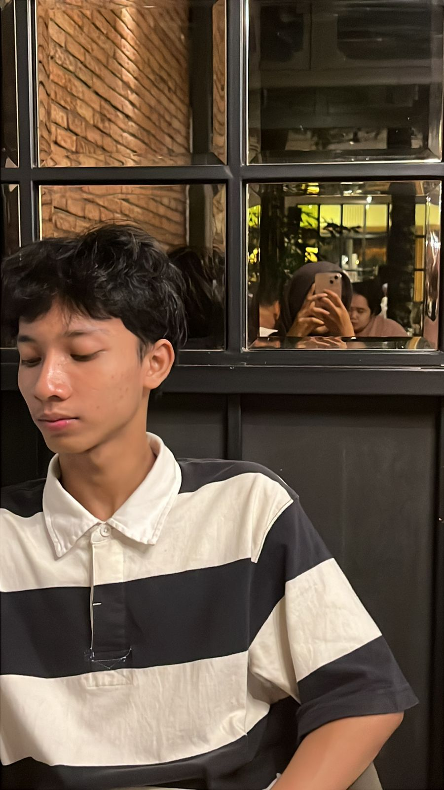
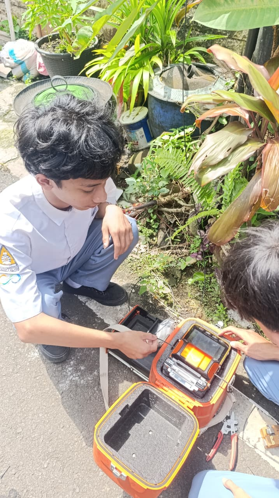
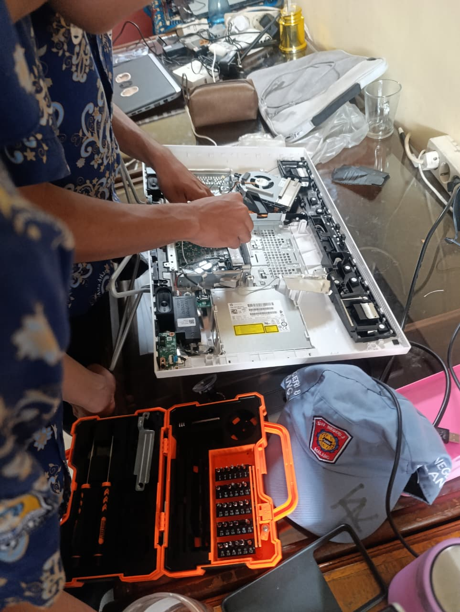
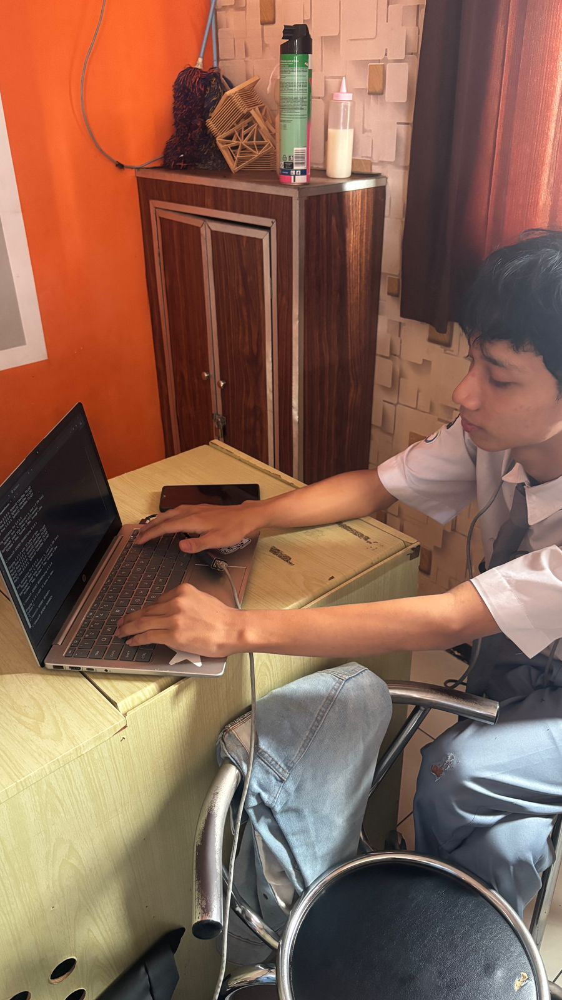
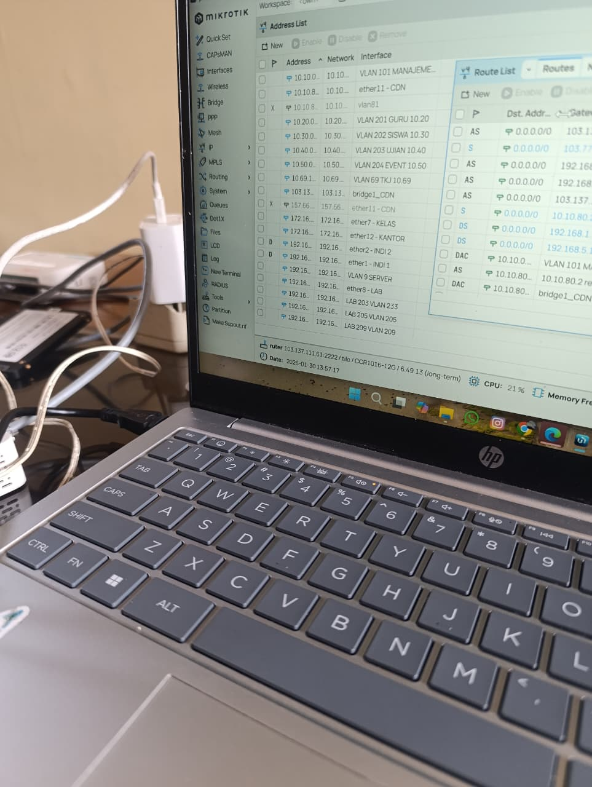
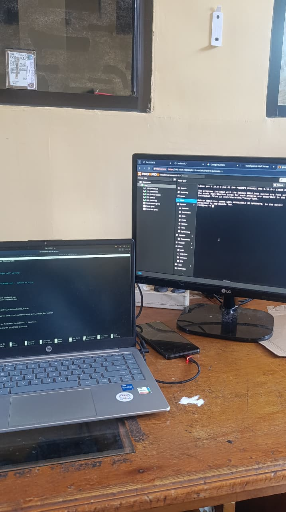

Dokumentasi kegiatan Praktik Kerja Lapangan yang dilaksanakan di Tefa SMKn 8 Malang sebagai wujud penerapan ilmu dan pengembangan kompetensi siswa SMK.
Lihat LaporanTeknik Komputer dan Jaringan
Tempat pelaksanaan PKL yang menjadi mitra SMK dalam menyiapkan tenaga kerja kompeten dan siap pakai.

Praktik Kerja Lapangan (PKL) merupakan program wajib yang diselenggarakan oleh Sekolah Menengah Kejuruan (SMK) sebagai bagian dari kurikulum yang bertujuan untuk memberikan pengalaman kerja nyata kepada peserta didik di dunia industri maupun dunia usaha yang relevan dengan bidang keahliannya.
Program PKL dilaksanakan berdasarkan Peraturan Menteri Pendidikan dan Kebudayaan Republik Indonesia serta kebijakan sekolah dalam rangka mempersiapkan lulusan yang kompeten, terampil, dan siap memasuki pasar kerja. Kegiatan ini menjadi jembatan antara teori yang diperoleh di bangku sekolah dengan penerapan nyata di lapangan.
Pelaksanaan PKL di Tefa SMKn 8 Malang selama 6 bulan memberikan pengalaman yang sangat berharga dalam bidang jaringan komputer dan administrasi sistem, mulai dari proses konfigurasi router, instalasi sistem operasi, monitoring jaringan, hingga perawatan hardware. Saya berharap laporan ini dapat menjadi acuan dan inspirasi bagi adik kelas yang akan melaksanakan PKL di kemudian hari.
Identitas lengkap peserta PKL tahun ajaran 2026.

Tujuan, manfaat, dan rangkaian kegiatan selama Praktik Kerja Lapangan berlangsung.
Mempersiapkan siswa agar memiliki kemampuan profesional, dapat menerapkan ilmu yang dipelajari di sekolah, serta mengenal kultur dunia kerja secara nyata dan terstruktur.
Meningkatkan wawasan, pengalaman, dan keterampilan teknis siswa. Membangun relasi profesional serta melatih sikap kerja yang disiplin, bertanggung jawab, dan kolaboratif.
PKL dilaksanakan selama 6 bulan mulai 5 Januari 2026 hingga 5 Juni 2026, dengan jam kerja Senin–Jumat pukul 07.00–15.00 WIB.
Keterampilan dan kemampuan teknis yang dikembangkan selama pelaksanaan PKL.
Kesimpulan selama 6 bulan PKL
Pelaksanaan Praktik Kerja Lapangan di Tefa SMKn 8 Malang telah memberikan banyak manfaat yang tidak ternilai. Selama 6 bulan penuh, Saya mendapatkan pengalaman langsung bagaimana sebuah institusi pendidikan mengelola infrastruktur jaringan komputer dan administrasi sistem dari awal hingga selesai.
Saya dapat menyimpulkan bahwa terdapat keselarasan yang cukup baik antara materi yang diajarkan di sekolah dengan kebutuhan industri, meskipun masih terdapat beberapa gap yang perlu dijembatani, terutama dalam hal penggunaan teknologi jaringan modern dan konfigurasi sistem yang kompleks.
PKL terbukti efektif dalam meningkatkan kompetensi teknis maupun sikap profesional siswa. Pengalaman ini menjadi bekal penting untuk memasuki dunia kerja maupun melanjutkan pendidikan ke jenjang yang lebih tinggi.
Dokumentasi momen-momen berkesan selama 6 bulan pelaksanaan PKL di Tefa SMKn 8 Malang.




